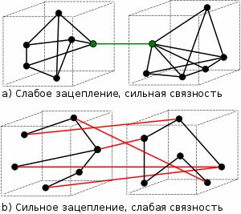
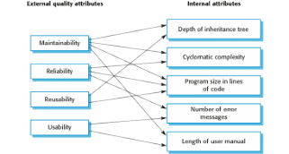

<!DOCTYPE HTML PUBLIC "-//W3C//DTD HTML 4.0 Transitional//EN">
<html>
<head>
	<meta http-equiv="content-type" content="text/html; charset=utf-8"/>
	<title></title>
	<meta name="generator" content="LibreOffice 5.2.2.2 (Linux)"/>
	<meta name="author" content="Dani "/>
	<meta name="created" content="2017-04-01T22:23:39.481685042"/>
	<meta name="changedby" content="Dani "/>
	<meta name="changed" content="2017-04-02T21:59:29.859518615"/>
	<style type="text/css">
		@page { margin: 56.7pt }
		p { margin-bottom: 7pt; line-height: 120% }
		td p { margin-bottom: 0pt }
		th p { margin-bottom: 0pt }
		h2.cjk { font-family: "Noto Sans CJK SC Regular" }
		h2.ctl { font-family: "FreeSans" }
		pre.cjk { font-family: "Courier New", monospace }
		h3.cjk { font-family: "Noto Sans CJK SC Regular" }
		h3.ctl { font-family: "FreeSans" }
		a:link { so-language: zxx }
		tt.cjk { font-family: "Courier New", monospace }
	</style>
</head>
<body lang="en-US" dir="ltr">
<p align="center" style="margin-top: 12pt; margin-bottom: 6pt; line-height: 100%; page-break-after: avoid">
<font face="Liberation Sans, sans-serif"><font size="6" style="font-size: 28pt"><b>Software
Design</b></font></font></p>
<ul>
	<li/>
<p style="margin-bottom: 0pt; line-height: 100%">Deriving a
	solution which satisfies software requirements</p>
	<li/>
<p style="margin-bottom: 0pt; line-height: 100%"><font size="3" style="font-size: 12pt"><font face="serif">Look
	at the problem from different angles to discover the design
	requirements</font></font></p>
	<li/>
<p style="margin-bottom: 0pt; line-height: 100%"><font size="3" style="font-size: 12pt"><font face="serif">Identify
	one or more solutions</font></font></p>
</ul>
<p style="margin-bottom: 0pt; line-height: 100%"><font color="#800000"><font size="3" style="font-size: 12pt"><font face="serif">Stages
of design</font></font></font></p>
<ul>
	<li/>
<p style="margin-bottom: 0pt; line-height: 100%"><font size="3" style="font-size: 12pt"><font face="serif">Problem
	understanding - Look at the problem from different angles to
	discover the design requirements</font></font></p>
	<li/>
<p style="margin-bottom: 0pt; line-height: 100%"><font size="3" style="font-size: 12pt"><font face="serif">Identify
	one or more solutions - </font><font face="serif">Evaluate possible
	solutions and choose the most appropriate depending on the
	designer's experience and available resources </font></font>
	</p>
	<li/>
<p style="margin-bottom: 0pt; line-height: 100%"><font size="3" style="font-size: 12pt"><font face="serif">D</font><font face="serif">escribe
	solution abstractions - Use graphical, formal or other descriptive
	notations to describe the components of the design </font></font>
	</p>
	<li/>
<p style="margin-bottom: 0pt; line-height: 100%"><font size="3" style="font-size: 12pt"><font face="serif">Repeat
	process for each identified abstraction until the design is
	expressed in primitive terms</font></font></p>
</ul>
<p style="margin-bottom: 0pt; line-height: 100%"><font size="3" style="font-size: 12pt"><font color="#990000"><font face="serif">The
design process</font></font></font></p>
<ul>
	<li/>
<p style="margin-bottom: 0pt; line-height: 100%"><font size="3" style="font-size: 12pt"><font face="serif">Any
	design may be modeled as a directed graph made up of entities with
	attributes which participate in relationships</font></font></p>
	<li/>
<p style="margin-bottom: 0pt; line-height: 100%"><font size="3" style="font-size: 12pt"><font face="serif">The
	system should be described at several different levels of
	abstraction</font></font></p>
	<li/>
<p style="margin-bottom: 0pt; line-height: 100%"><font size="3" style="font-size: 12pt"><font face="serif">Design
	takes place in overlapping stages. It is artificial to separate it
	into distinct phases but some separation is usually necessary</font></font></p>
</ul>
<p style="margin-bottom: 0pt; line-height: 100%"><font color="#990000"><font size="3" style="font-size: 12pt"><font face="serif">Design
phases</font></font></font></p>
<ul>
	<li/>
<p style="margin-bottom: 0pt; line-height: 100%"><font size="3" style="font-size: 12pt"><font face="serif">Architectural
	design Identify sub-systems</font></font></p>
	<li/>
<p style="margin-bottom: 0pt; line-height: 100%"><font size="3" style="font-size: 12pt"><font face="serif">Abstract
	specification Specify sub-systems</font></font></p>
	<li/>
<p style="margin-bottom: 0pt; line-height: 100%"><font size="3" style="font-size: 12pt"><font face="serif">Interface
	design Describe sub-system interfaces</font></font></p>
	<li/>
<p style="margin-bottom: 0pt; line-height: 100%"><font size="3" style="font-size: 12pt"><font face="serif">Component
	design Decompose sub-systems into components</font></font></p>
	<li/>
<p style="margin-bottom: 0pt; line-height: 100%"><font size="3" style="font-size: 12pt"><font face="serif">Data
	structure design Design data structures to hold problem data</font></font></p>
	<li/>
<p style="margin-bottom: 0pt; line-height: 100%"><font size="3" style="font-size: 12pt"><font face="serif">Algorithm
	design Design algorithms for problem functions</font></font></p>
	<p style="margin-bottom: 0pt; line-height: 100%; background: transparent; page-break-before: auto">
	<font color="#990000"><font size="3" style="font-size: 12pt"><font face="serif">Design
	phases</font></font></font></p>
	<li/>
<p style="margin-bottom: 0pt; line-height: 100%; background: transparent; page-break-before: auto">
	<font color="#000000"><font size="3" style="font-size: 12pt"><font color="#990000"><font face="serif">Architectural
	design</font></font><font face="serif"> - Identify sub-systems</font></font></font></p>
	<li/>
<p style="margin-bottom: 0pt; line-height: 100%; background: transparent">
	<font color="#000000"><font size="3" style="font-size: 12pt"><font color="#990000"><font face="serif">Abstract
	specification </font></font><font face="serif">- Specify sub-systems</font></font></font></p>
	<li/>
<p style="margin-bottom: 0pt; line-height: 100%; background: transparent">
	<font color="#000000"><font size="3" style="font-size: 12pt"><font color="#990000"><font face="serif">Interface
	design </font></font><font face="serif">- Describe sub-system
	interfaces</font></font></font></p>
	<li/>
<p style="margin-bottom: 0pt; line-height: 100%; background: transparent">
	<font color="#000000"><font size="3" style="font-size: 12pt"><font color="#990000"><font face="serif">Component
	design </font></font><font face="serif">- Decompose sub-systems into
	components</font></font></font></p>
	<li/>
<p style="margin-bottom: 0pt; line-height: 100%; background: transparent">
	<font color="#000000"><font size="3" style="font-size: 12pt"><font color="#990000"><font face="serif">Data
	structure design </font></font><font face="serif">- Design data
	structures to hold problem data</font></font></font></p>
	<li/>
<p style="margin-bottom: 0pt; line-height: 100%; background: transparent">
	<font color="#000000"><font size="3" style="font-size: 12pt"><font color="#990000"><font face="serif">Algorithm
	design</font></font><font face="serif"> - Design algorithms for
	problem functions</font></font></font></p>
</ul>
<p style="margin-bottom: 0pt; line-height: 100%; background: transparent; page-break-before: auto">
<font color="#990000"><font size="3" style="font-size: 12pt"><font face="serif">Design
strategies</font></font></font></p>
<ul>
	<li/>
<p style="margin-bottom: 0pt; line-height: 100%; background: transparent; page-break-before: auto">
	<font color="#000000"><font size="3" style="font-size: 12pt"><font color="#990000"><font face="serif">Functional
	design</font></font><font face="serif"> - The system is designed
	from a functional viewpoint. The system state is centralized and
	shared between the functions operating on that state</font></font></font></p>
	<li/>
<p style="margin-bottom: 0pt; line-height: 100%; background: transparent">
	<font color="#000000"><font size="3" style="font-size: 12pt"><font color="#990000"><font face="serif">Object-oriented
	design</font></font><font face="serif"> - The system is viewed as a
	collection of interacting objects. The system state is
	de-centralized and each object manages its own state. Objects may be
	instances of an object class and communicate by exchanging methods</font></font></font></p>
</ul>
<p style="margin-bottom: 0pt; line-height: 100%"><font color="#990000"><font size="3" style="font-size: 12pt"><span style="background: transparent"><font face="serif">Design
quality</font></span></font></font></p>
<ul>
	<li/>
<p style="margin-bottom: 0pt; line-height: 100%"><font size="3" style="font-size: 12pt"><span style="background: transparent"><font face="serif">Design
	quality is an elusive </font><font face="serif">concept. Quality
	depends on specific </font><font face="serif">organizational</font><font face="serif">
	priorities.</font></span></font></p>
	<li/>
<p style="margin-bottom: 0pt; line-height: 100%"><font size="3" style="font-size: 12pt"><font face="serif">A
	'good' design may be the most efficient, the cheapest, the most
	</font><font face="serif"><span style="background: #ffff00">maintainable</span></font><font face="serif">,
	the most reliable, etc.</font></font></p>
	<li/>
<p style="margin-bottom: 0pt; line-height: 100%"><font size="3" style="font-size: 12pt"><font face="serif">The
	attributes discussed here are concerned with the maintainability of
	the design</font></font></p>
	<li/>
<p style="margin-bottom: 0pt; line-height: 100%"><font size="3" style="font-size: 12pt"><font face="serif">Quality
	characteristics are equally applicable to function-oriented and
	object-oriented designs</font></font></p>
</ul>
<p style="margin-bottom: 0pt; line-height: 100%"><font size="3" style="font-size: 12pt"><font face="serif">A
maintainable design can be adapted to modify existing functions and
add new functionality. The design must therefore be understandable
and changes should be local in effect. </font><font face="serif">The
design components should be cohesive which means that all parts of
the component should have close logical relationship. They should be
loosely coupled which means they should not be tightly integrated.
Coupling is a measure of the independence of the components. The
looser the coupling, the easiest it is to adapt the design as the
ef</font><font face="serif">f</font><font face="serif">ect of changes
are localized.</font></font></p>
<p style="margin-bottom: 0pt; line-height: 100%"><font size="3" style="font-size: 12pt"><font face="serif">D</font><font face="serif">esign
quality metrics may be used to assess if a design is a “good”
design.</font></font></p>
<p style="margin-bottom: 0pt; line-height: 100%"></p>
<p style="margin-bottom: 0pt; line-height: 100%"><br/>

</p>
<p style="margin-bottom: 0pt; line-height: 100%"><font color="#990000"><font face="serif"><font size="4" style="font-size: 14pt">Cohesion</font></font></font><font face="serif"><font size="6" style="font-size: 27pt">
</font></font>
</p>
<ul>
	<li/>
<p style="margin-bottom: 0pt; line-height: 100%"><font face="serif"><font size="3" style="font-size: 12pt">A
	measure of how well a component 'fits together'.</font></font></p>
	<li/>
<p style="margin-bottom: 0pt; line-height: 100%"><font size="3" style="font-size: 12pt"><font face="serif">A
	component should implement a single logical entity or function</font></font></p>
	<li/>
<p style="margin-bottom: 0pt; line-height: 100%"><font size="3" style="font-size: 12pt"><font face="serif">Cohesion
	is a </font><font face="serif"><i>desirable</i></font><font face="serif">
	design component attribute as when a change has to be made, it is
	locali</font><font face="serif">z</font><font face="serif">ed in a
	single cohesive component</font></font></p>
	<li/>
<p style="margin-bottom: 0pt; line-height: 100%"><font size="3" style="font-size: 12pt"><font face="serif">Various
	levels of cohesion have been identified</font></font></p>
</ul>
<p style="margin-bottom: 0pt; line-height: 100%"><br/>

</p>
<p style="margin-bottom: 0pt; line-height: 100%"><font color="#990000"><font face="serif"><font size="3" style="font-size: 13pt">Cohesion
levels</font></font></font></p>
<ul>
	<li/>
<p style="margin-bottom: 0pt; line-height: 100%"><font color="#990000"><font face="serif"><font size="3" style="font-size: 12pt">Coincidental
	cohesion</font></font></font><font face="serif"><font size="3" style="font-size: 12pt">
	(weak) - Parts of a component are </font></font><font face="serif"><font size="3" style="font-size: 12pt">not
	related but</font></font><font face="serif"><font size="3" style="font-size: 12pt">
	simply bundled together </font></font><font face="serif"><font size="3" style="font-size: 12pt">into
	a single component</font></font></p>
</ul>
<ul>
	<li/>
<p style="margin-bottom: 0pt; line-height: 100%"><font color="#990000"><font face="serif"><font size="3" style="font-size: 12pt">Logical
	association</font></font></font><font face="serif"><font size="3" style="font-size: 12pt">
	(weak) -Components which perform similar functions are grouped /</font></font><font face="serif"><font size="3" style="font-size: 12pt">e.g.
	input, error handling; </font></font><font face="serif">grouping all
	mouse and keyboard input handling routines</font><font face="serif"><font size="3" style="font-size: 12pt">/</font></font></p>
	<li/>
<p style="margin-bottom: 0pt; line-height: 100%"><font size="3" style="font-size: 12pt"><font color="#990000"><font face="serif">Temporal
	cohesion</font></font><font face="serif"> (weak) - Components which
	are activated at the same time are grouped /</font><font face="serif">start
	up, shutdown</font><font face="serif">/</font></font></p>
	<li/>
<p style="margin-bottom: 0pt; line-height: 100%"><font size="3" style="font-size: 12pt"><font color="#990000"><font face="serif">Procedural
	cohesion </font></font><font face="serif">(weak) -The elements in a
	component make up a single control sequence </font></font>
	</p>
	<li/>
<p style="margin-bottom: 0pt; line-height: 100%"><font size="3" style="font-size: 12pt"><font color="#990000"><font face="serif">Communicational
	cohesion (medium) </font></font><font face="serif">- All the
	elements of a component operate on the same input or produce the
	same output</font></font></p>
	<li/>
<p style="margin-bottom: 0pt; line-height: 100%"><font size="3" style="font-size: 12pt"><font color="#990000"><font face="serif">Sequential
	cohesion (medium)</font></font><font face="serif"> - The output for
	one part of a component is the input to another part</font></font></p>
	<li/>
<p style="margin-bottom: 0pt; line-height: 100%"><font size="3" style="font-size: 12pt"><font color="#990000"><font face="serif">Functional
	cohesion (strong) -</font></font><font face="serif"> Each part of a
	component is necessary for the execution of a single function</font></font></p>
</ul>
<ol>
	<li/>
<dd><font size="3" style="font-size: 12pt"><font face="serif">//Implementation
	of r(x) = 5x + 3 </font></font>
	</dd><li/>
<dd>
	a(x, y) = x + y ' Groups Addition 
	</dd><li/>
<dd>
	b(x, y) = x * y ' Groups Multiplications 
	</dd><li/>
<dd>
	r(x) = a(b(5, x), 3) 
	</dd><li/>
<dd style="margin-bottom: 14.2pt">
	//Functional because the parts &quot;a&quot; and &quot;b&quot;
	contribute well defined tasks. 
	</dd></ol>
<ul>
	<li/>
<p style="margin-bottom: 0pt; line-height: 100%"><font size="3" style="font-size: 12pt"><font color="#990000"><font face="serif">Object
	cohesion (strong)</font></font><font face="serif"> - Each operation
	provides functionality which allows object attributes to be modified
	or inspected</font></font></p>
</ul>
<p style="margin-bottom: 0pt; line-height: 100%"><font color="#000000"><font size="3" style="font-size: 12pt"><font face="serif">A
cohesive object is one in which a single entity is represented and
all the operations of this entity are included </font><font face="serif">with</font><font face="serif">
the object.</font></font></font></p>
<p style="margin-bottom: 0pt; line-height: 100%"><font color="#000000"><font size="3" style="font-size: 12pt"><font face="serif">If
a class in an Object-oriented system inherit attributes and
operations from a superclass the cohesion of that class is reduced.
This is no longer possible to consider that object class as
self-containing unit.</font></font></font></p>
<p style="margin-bottom: 0pt; line-height: 100%"><br/>

</p>
<p style="margin-bottom: 0pt; line-height: 100%"><font color="#990000"><font size="3" style="font-size: 12pt"><font face="serif">Cohesion
as a design attribute.</font></font></font></p>
<ul>
	<li/>
<p style="margin-bottom: 0pt; line-height: 100%"><font size="3" style="font-size: 12pt"><font face="serif">Not
	well-defined. Often difficult to classify cohesion</font></font></p>
	<li/>
<p style="margin-bottom: 0pt; line-height: 100%"><font size="3" style="font-size: 12pt"><font face="serif">Inheriting
	attributes from super-classes weakens cohesion</font></font></p>
	<li/>
<p style="margin-bottom: 0pt; line-height: 100%"><font size="3" style="font-size: 12pt"><font face="serif">To
	understand a component, the super-classes as well as the component
	class must be examined</font></font></p>
	<li/>
<p style="margin-bottom: 0pt; line-height: 100%"><font size="3" style="font-size: 12pt"><font face="serif">Object
	class browsers assist with this process</font></font></p>
</ul>
<p><font face="serif"><font size="3" style="font-size: 12pt">In
object-oriented programming, if the methods that serve a class tend
to be similar in many aspects, then the class is said to have high
cohesion. In a highly cohesive system, code readability and
reusability is increased, while complexity is kept manageable.</font></font></p>
<p><font face="Serif">Cohesion is increased if:</font></p>
<ul>
	<li/>
<p style="margin-bottom: 0pt"><font face="Serif">The
	functionalities embedded in a class, accessed through its methods,
	have much in common. </font>
	</p>
	<li/>
<p><font face="Serif">Methods carry out a small number of
	related activities, by <i>avoiding</i> coarsely grained or unrelated
	sets of data. </font>
	</p>
</ul>
<p><font face="Serif">Advantages of high cohesion (or “strong
cohesion”) are:</font></p>
<ul>
	<li/>
<p style="margin-bottom: 0pt"><font face="Serif">Reduced
	module complexity (they are simpler, having fewer operations). </font>
	</p>
	<li/>
<p style="margin-bottom: 0pt"><font face="Serif">Increased
	system maintainability, because logical changes in the domain affect
	fewer modules, and because changes in one module require fewer
	changes in other modules. </font>
	</p>
	<li/>
<p><font face="Serif">Increased module reusability, because
	application developers will find the component they need more easily
	among the cohesive set of operations provided by the module. </font>
	</p>
</ul>
<p><font face="Serif">While in principle a module can have perfect
cohesion by only consisting of a single, atomic element – having a
single function, for example – in practice complex tasks are not
expressible by a single, simple element. Thus a single-element module
has an element that either is too complicated, in order to accomplish
task, or is too narrow, and thus tightly coupled to other modules.
Thus cohesion is balanced with both unit complexity and coupling.</font></p>
<p><font face="Serif"><font color="#800000">Coupling</font></font></p>
<ul>
	<li/>
<p style="margin-bottom: 0pt"><font face="Serif">A measure of
	the strength of the inter-connections between system components</font></p>
	<li/>
<p style="margin-bottom: 0pt"><font face="Serif">Loose
	coupling means component changes are unlikely to affect other
	components</font></p>
	<li/>
<p style="margin-bottom: 0pt"><font face="Serif">Shared
	variables or control information exchange lead to tight coupling</font></p>
	<li/>
<p style="margin-bottom: 0pt"><font face="Serif">Loose
	coupling can be achieved by state decentralization (as in objects)
	and component communication via parameters or message passing</font></p>
</ul>
<p style="margin-bottom: 0pt; line-height: 100%;">
</p>
<p  style="color:green">a) High cohesion, Low coupling</br>
b)  Low cohesion, High coupling
<br>
</p>

<p style="margin-bottom: 0pt; line-height: 100%"><font size="3" style="font-size: 12pt"><font face="serif">Cyclomatic
Complexity - </font><a href="https://en.wikipedia.org/wiki/Cyclomatic_complexity"><font face="serif">https://en.wikipedia.org/wiki/Cyclomatic_complexity</font></a></font></p>
<p style="margin-bottom: 0pt; line-height: 100%"><font size="3" style="font-size: 12pt"><font face="serif">This
is a measure of the control complexity of a program. This control
complexity may be related to program understandability.</font></font></p>
<h2 class="western"><font size="3" style="font-size: 12pt"><font face="serif">McCabe's
Cyclomatic Complexity (V(G) also known as CC)</font></font></h2>
<p>Introduced by Thomas McCabe in 1976, cyclomatic complexity
measures the number of linearly-independent paths through a program
module. This measure provides a single ordinal number that can be
compared to the complexity of other programs. Cyclomatic complexity
is often referred to simply as program complexity or as McCabe's
complexity. 
</p>
<p>Methods with a high complexity tend to be more difficult to
understand and maintain. In general the more complex the methods of
an application are, the more difficult it is to test the application,
which adversely affects the application's reliability. V(G) counts
the number of branches in the body of the method defined as:</p>
<ul>
	<li/>
<p>if statements</p>
	<li/>
<p>conditions such as &amp;&amp; and ||</p>
	<li/>
<p>for statements</p>
	<li/>
<p>while statements</p>
</ul>
<p>This metric is computed as follows:</p>
<ul>
	<li/>
<p>Each function has a base complexity of 1</p>
	<li/>
<p>Each atomic condition adds 1</p>
	<li/>
<p>Each case block of switch adds 1</p>
</ul>
<p>If V(G) is larger than 10, consider to split the method up. The
more complex the program the harder it is to test and comprehend.
This metric can additionally be interpreted as the cost of producing
test cases for the code. The following is an example of how
RefactorIT computes V(G): 
</p>
<pre class="western">... // in the beginning: V(G) = 1
// +2 conditions, V(G) = 3:
if ((i &gt; 13) || (i &lt; 15)) {
  System.out.println(&quot;Hello, there!&quot;);
  // +3 conditions, V(G) = 6:
  while ((i &gt; 0) || ((i &gt; 100) &amp;&amp; (i &lt; 999))) {
    ...
  }
}
// +1 condition, V(G) = 7
i = (i == 10) ? 0 : 1;
switch(a) {
  case 1: // +1, V(G) = 8
    break;
  case 2: // +1, V(G) = 9
  case 3: // +1, V(G) = 10
    break;
  default:
    throw new Runtim</pre><p style="margin-bottom: 0pt; line-height: 100%">
<br/>

</p>
<p style="margin-bottom: 0pt; line-height: 100%"><font face="serif"><font size="3" style="font-size: 12pt">Weighted
Methods per Class - </font></font><font face="serif">The WMC metric
is the sum of the complexities of all class methods. It is an
indicator of how much effort is required to develop and maintain a
particular class. RefactorIT sums the V(G) (cyclomatic complexity) of
all declared methods and constructors of class to calculate the WMC.
A class with a low WMC usually points to greater polymorphism. A
class with a high WMC indicates that the class is complex
(application specific) and therefore harder to reuse and maintain.
The lower limit for WMC in RefactorIT is default 1 because a class
should consist of at least one function and the upper default limit
is 50. </font>
</p>
<h2 class="western" style="margin-bottom: 0pt; line-height: 100%">
<br>
<font face="serif">Depth in Tree (DIT)</font></h2>
<p>This metric calculates how far down a class is declared in the
inheritance hierarchy, where the DIT is the length from the class to
the root of the inheritance tree. In Java, all classes have
java.lang.Object as their ultimate super class, which is defined to
have a depth of 0. So a class that immediately extends
java.lang.Object has a metric value of 1. Any of its subclasses will
have a value of 2 and so on. DIT is defined in RefactorIT for classes
and interfaces as follows: 
</p>
<ul>
	<li/>
<p>All interface types have a depth of 1</p>
	<li/>
<p>The class java.lang.Object has a depth of 0</p>
	<li/>
<p>All other classes have a depth of 1 plus the depth of their
	super class</p>
</ul>
<p>The deeper a class is in the hierarchy, the greater the number of
methods and state variables it is likely to inherit, which makes it
more difficult to predict its behaviour. It becomes more specialised
and it can be hard to understand a system with many inheritance
layers. However, there is a greater potential reuse of inherited
methods. 
</p>
<p>A DIT value of 0 indicates a root while a value of 2 and 3
indicates a higher degree of reuse. If there is a majority of DIT
values bellow 2, it may represent poor exploitation of the advantages
of OO design and inheritance. RefactorIT recommends a maximum DIT
value of 5 since deeper trees constitute greater design complexity as
more methods and classes are involved. 
</p>
<p style="margin-bottom: 0pt; line-height: 100%"><br/>

</p>
<h2 class="western" style="page-break-before: always"><font face="serif">Number
of Children in Tree (NOC)</font></h2>
<p>Also known as : Number of Direct Subclasses of a Class, this
metric measures the number of direct subclasses of a class. The size
of NOC approximately indicates how an application reuses itself. It
is assumed that the more children a class has, the more
responsibility there is on the maintainer of the class not to break
the children's behaviour. As a result, it is harder to modify the
class and requires more testing. 
</p>
<p>The upper recommended limit for a class in RefactorIT is 10 and
the lower limit is 0. If NOC exceeds 10 children for a class, this
may indicate a misuse of subclassing. 
</p>
<p style="margin-bottom: 0pt; line-height: 100%"><font color="#800000"><font face="serif">Coupling
and inheritance</font></font></p>
<ul>
	<li/>
<p style="margin-bottom: 0pt; line-height: 100%"><font color="#000000"><font face="serif">Object-oriented
	systems are loosely coupled because there is no shared state and
	objects communicate using message passing</font></font></p>
	<li/>
<p style="margin-bottom: 0pt; line-height: 100%"><font color="#000000"><font face="serif">However,
	an object class is coupled to its super-classes. Changes made to the
	attributes or operations in a super-class propagate to all
	sub-classes. Such changes must be carefully controlled</font></font></p>
</ul>
<p style="margin-bottom: 0pt; line-height: 100%"><font color="#800000"><font face="serif">Understandability</font></font></p>
<ul>
	<li/>
<p style="margin-bottom: 0pt; line-height: 100%"><font color="#000000"><font face="serif">Related
	to several component characteristics</font></font></p>
</ul>
<p style="margin-left: 48pt; margin-bottom: 0pt; line-height: 100%; background: transparent; page-break-before: auto">
<font color="#000000"><font face="serif"><i>Cohesion</i></font><font face="serif">.
Can the component be understood on its own?</font></font></p>
<p style="margin-left: 48pt; margin-bottom: 0pt; line-height: 100%; background: transparent">
<font color="#000000"><font face="serif"><i>Naming</i></font><font face="serif">.
Are meaningful names used?</font></font></p>
<p style="margin-left: 48pt; margin-bottom: 0pt; line-height: 100%; background: transparent">
<font color="#000000"><font face="serif"><i>Documentation</i></font><font face="serif">.
Is the design well-documented?</font></font></p>
<p style="margin-left: 48pt; margin-bottom: 0pt; line-height: 100%; background: transparent">
<font color="#000000"><font face="serif"><i>Complexity</i></font><font face="serif">.
Are complex algorithms used?</font></font></p>
<ul>
	<li/>
<p style="margin-bottom: 0pt; line-height: 100%; background: transparent">
	<font color="#000000"><font face="serif">Informally, high complexity
	means many relationships between different parts of the design.
	hence it is hard to understand</font></font></p>
	<li/>
<p style="margin-bottom: 0pt; line-height: 100%; background: transparent">
	<font color="#000000"><font face="serif">Most design quality metrics
	are oriented towards complexity measurement. They are of limited use</font></font></p>
</ul>
<p style="margin-bottom: 0pt; line-height: 100%"><font color="#800000"><font face="serif">Adaptability</font></font></p>
<ul>
	<li/>
<p style="margin-bottom: 0pt; line-height: 100%"><font color="#000000"><font face="serif">A
	design is adaptable if:</font></font></p>
</ul>
<ol>
	<li/>
<p style="margin-bottom: 0pt; line-height: 100%; background: transparent; page-break-before: auto">
	<font color="#000000"><font face="serif">Its components are loosely
	coupled</font></font></p>
	<li/>
<p style="margin-bottom: 0pt; line-height: 100%; background: transparent">
	<font color="#000000"><font face="serif">It is well-documented and
	the documentation is up to date</font></font></p>
	<li/>
<p style="margin-bottom: 0pt; line-height: 100%; background: transparent">
	<font color="#000000"><font face="serif">There is an obvious
	correspondence between design levels (design visibility)</font></font></p>
	<li/>
<p style="margin-bottom: 0pt; line-height: 100%; background: transparent">
	<font color="#000000"><font face="serif">Each component is a
	self-contained entity (tightly cohesive)</font></font></p>
</ol>
<ul>
	<li/>
<p style="margin-bottom: 0pt; line-height: 100%"><font color="#000000"><font face="serif">To
	adapt a design, it must be possible to trace the links between
	design components so that change consequences can be analyzed </font></font>
	</p>
</ul>
<p style="margin-bottom: 0pt; line-height: 100%"><font color="#800000"><font face="serif">Adaptability
and inheritance</font></font></p>
<ul>
	<li/>
<p style="margin-bottom: 0pt; line-height: 100%"><font face="serif">Inheritance
	dramatically improves adaptability.</font></p>
	<li/>
<p style="margin-bottom: 0pt; line-height: 100%"><font face="serif">Components
	may be adapted without change by deriving a sub-class and modifying
	that derived class</font></p>
	<li/>
<p style="margin-bottom: 0pt; line-height: 100%"><font face="serif">However,
	as the depth of the inheritance hierarchy increases, it becomes
	increasingly complex. It must be periodically reviewed and
	restructured</font></p>
</ul>
<p style="margin-bottom: 0pt; line-height: 100%"><font color="#800000"><span style="background: #ffff00"><font face="serif">Key
points</font></span></font></p>
<ul>
	<li/>
<p style="margin-bottom: 0pt; line-height: 100%"><font face="serif">Design
	is a creative process</font></p>
	<li/>
<p style="margin-bottom: 0pt; line-height: 100%"><font face="serif">Design
	activities include architectural design, system specification,
	component design, data structure design and algorithm design</font></p>
	<li/>
<p style="margin-bottom: 0pt; line-height: 100%"><font face="serif">Functional
	decomposition considers the system as a set of functional units</font></p>
	<li/>
<p style="margin-bottom: 0pt; line-height: 100%"><font face="serif">Object-oriented
	decomposition considers the system as a set of objects</font></p>
	<li/>
<p style="margin-bottom: 0pt; line-height: 100%"><font face="serif">Decisions
	on parallelism should usually be detailed design decisions</font></p>
	<p style="margin-bottom: 0pt; line-height: 100%"></p>
</ul>
<table width="100%" cellpadding="2" cellspacing="2">
	<tr>
		<th width="40%" style="border-top: 1px double #808080; border-bottom: 1px double #808080; border-left: 1px double #808080; border-right: none; padding-top: 1.4pt; padding-bottom: 1.4pt; padding-left: 1.4pt; padding-right: 0pt">
			<p align="left">Name:&nbsp;&nbsp;&nbsp;&nbsp;&nbsp;&nbsp;&nbsp;</p>
		</th>
		<th width="60%" style="border: 1px double #808080; padding: 1.4pt">
			<p align="left">Description:</p>
		</th>
	</tr>
	<tr>
		<td style="border-top: none; border-bottom: 1px double #808080; border-left: 1px double #808080; border-right: none; padding-top: 0pt; padding-bottom: 1.4pt; padding-left: 1.4pt; padding-right: 0pt">
			<p><tt class="western"><a href="https://staff.unak.is/andy/staticanalysis0809/metrics/a.html">Abstractness
			(A)</a></tt></p>
		</td>
		<td style="border-top: none; border-bottom: 1px double #808080; border-left: 1px double #808080; border-right: 1px double #808080; padding-top: 0pt; padding-bottom: 1.4pt; padding-left: 1.4pt; padding-right: 1.4pt">
			<p>This metric counts the ratio of abstract classes and interfaces
			for a package</p>
		</td>
	</tr>
	<tr>
		<td style="border-top: none; border-bottom: 1px double #808080; border-left: 1px double #808080; border-right: none; padding-top: 0pt; padding-bottom: 1.4pt; padding-left: 1.4pt; padding-right: 0pt">
			<p><tt class="western"><a href="https://staff.unak.is/andy/staticanalysis0809/metrics/ca.html">Afferent
			Coupling (Ca)</a></tt></p>
		</td>
		<td style="border-top: none; border-bottom: 1px double #808080; border-left: 1px double #808080; border-right: 1px double #808080; padding-top: 0pt; padding-bottom: 1.4pt; padding-left: 1.4pt; padding-right: 1.4pt">
			<p>This metric counts the number of classes from other packages
			that depend on classes in the analysed package</p>
		</td>
	</tr>
	<tr>
		<td style="border-top: none; border-bottom: 1px double #808080; border-left: 1px double #808080; border-right: none; padding-top: 0pt; padding-bottom: 1.4pt; padding-left: 1.4pt; padding-right: 0pt">
			<p><tt class="western"><a href="https://staff.unak.is/andy/staticanalysis0809/metrics/cloc.html">Comment
			Lines of Code (CLOC)</a></tt></p>
		</td>
		<td style="border-top: none; border-bottom: 1px double #808080; border-left: 1px double #808080; border-right: 1px double #808080; padding-top: 0pt; padding-bottom: 1.4pt; padding-left: 1.4pt; padding-right: 1.4pt">
			<p>CLOC counts all lines that contain regular comments and Javadoc
			comments</p>
		</td>
	</tr>
	<tr>
		<td style="border-top: none; border-bottom: 1px double #808080; border-left: 1px double #808080; border-right: none; padding-top: 0pt; padding-bottom: 1.4pt; padding-left: 1.4pt; padding-right: 0pt">
			<p><tt class="western"><a href="https://staff.unak.is/andy/staticanalysis0809/metrics/cyc.html">Cyclic
			Dependencies (CYC)</a></tt></p>
		</td>
		<td style="border-top: none; border-bottom: 1px double #808080; border-left: 1px double #808080; border-right: 1px double #808080; padding-top: 0pt; padding-bottom: 1.4pt; padding-left: 1.4pt; padding-right: 1.4pt">
			<p>This estimates how many cycles in which a package is involved</p>
		</td>
	</tr>
	<tr>
		<td height="21" style="border-top: none; border-bottom: 1px double #808080; border-left: 1px double #808080; border-right: none; padding-top: 0pt; padding-bottom: 1.4pt; padding-left: 1.4pt; padding-right: 0pt">
			<p><tt class="western"><a href="https://staff.unak.is/andy/staticanalysis0809/metrics/cyclomatic_complexity.html">Cyclomatic
			Complexity (V(G) aka CC)</a></tt></p>
		</td>
		<td style="border-top: none; border-bottom: 1px double #808080; border-left: 1px double #808080; border-right: 1px double #808080; padding-top: 0pt; padding-bottom: 1.4pt; padding-left: 1.4pt; padding-right: 1.4pt">
			<p>V(G) counts the number of code conditions giving an indication
			of how complex the program is</p>
		</td>
	</tr>
	<tr>
		<td style="border-top: none; border-bottom: 1px double #808080; border-left: 1px double #808080; border-right: none; padding-top: 0pt; padding-bottom: 1.4pt; padding-left: 1.4pt; padding-right: 0pt">
			<p><tt class="western"><a href="https://staff.unak.is/andy/staticanalysis0809/metrics/dc.html">Density
			of Comments (DC = CLOC / LOC)</a></tt></p>
		</td>
		<td style="border-top: none; border-bottom: 1px double #808080; border-left: 1px double #808080; border-right: 1px double #808080; padding-top: 0pt; padding-bottom: 1.4pt; padding-left: 1.4pt; padding-right: 1.4pt">
			<p>This determines a density value for how commented the code is</p>
		</td>
	</tr>
	<tr>
		<td style="border-top: none; border-bottom: 1px double #808080; border-left: 1px double #808080; border-right: none; padding-top: 0pt; padding-bottom: 1.4pt; padding-left: 1.4pt; padding-right: 0pt">
			<p><tt class="western"><a href="https://staff.unak.is/andy/staticanalysis0809/metrics/dip.html">Dependency
			Inversion Principle (DIP)</a></tt></p>
		</td>
		<td style="border-top: none; border-bottom: 1px double #808080; border-left: 1px double #808080; border-right: 1px double #808080; padding-top: 0pt; padding-bottom: 1.4pt; padding-left: 1.4pt; padding-right: 1.4pt">
			<p>The DIP metric calculates the ratio of dependencies that have
			abstract classes or interfaces as a target</p>
		</td>
	</tr>
	<tr valign="top">
		<td style="border-top: none; border-bottom: 1px double #808080; border-left: 1px double #808080; border-right: none; padding-top: 0pt; padding-bottom: 1.4pt; padding-left: 1.4pt; padding-right: 0pt">
			<p><tt class="western"><a href="https://staff.unak.is/andy/staticanalysis0809/metrics/dit.html">Depth
			in Tree (DIT)</a></tt></p>
		</td>
		<td style="border-top: none; border-bottom: 1px double #808080; border-left: 1px double #808080; border-right: 1px double #808080; padding-top: 0pt; padding-bottom: 1.4pt; padding-left: 1.4pt; padding-right: 1.4pt">
			<p>This is the distance from the class to the root of the
			inheritance tree</p>
		</td>
	</tr>
	<tr>
		<td style="border-top: none; border-bottom: 1px double #808080; border-left: 1px double #808080; border-right: none; padding-top: 0pt; padding-bottom: 1.4pt; padding-left: 1.4pt; padding-right: 0pt">
			<p><tt class="western"><a href="https://staff.unak.is/andy/staticanalysis0809/metrics/dcyc.html">Direct
			Cyclic Dependencies (DCYC)</a></tt></p>
		</td>
		<td style="border-top: none; border-bottom: 1px double #808080; border-left: 1px double #808080; border-right: 1px double #808080; padding-top: 0pt; padding-bottom: 1.4pt; padding-left: 1.4pt; padding-right: 1.4pt">
			<p>Direct cyclic dependencies counts every mutual dependency
			between packages</p>
		</td>
	</tr>
	<tr>
		<td style="border-top: none; border-bottom: 1px double #808080; border-left: 1px double #808080; border-right: none; padding-top: 0pt; padding-bottom: 1.4pt; padding-left: 1.4pt; padding-right: 0pt">
			<p><tt class="western"><a href="https://staff.unak.is/andy/staticanalysis0809/metrics/d.html">Distance
			from the Main Sequence (D)</a></tt></p>
		</td>
		<td style="border-top: none; border-bottom: 1px double #808080; border-left: 1px double #808080; border-right: 1px double #808080; padding-top: 0pt; padding-bottom: 1.4pt; padding-left: 1.4pt; padding-right: 1.4pt">
			<p>The perpendicular distance of a package from the main sequence</p>
		</td>
	</tr>
	<tr>
		<td style="border-top: none; border-bottom: 1px double #808080; border-left: 1px double #808080; border-right: none; padding-top: 0pt; padding-bottom: 1.4pt; padding-left: 1.4pt; padding-right: 0pt">
			<p><tt class="western"><a href="https://staff.unak.is/andy/staticanalysis0809/metrics/ce.html">Efferent
			Coupling (Ce)</a></tt></p>
		</td>
		<td style="border-top: none; border-bottom: 1px double #808080; border-left: 1px double #808080; border-right: 1px double #808080; padding-top: 0pt; padding-bottom: 1.4pt; padding-left: 1.4pt; padding-right: 1.4pt">
			<p>This metric is a measure for the number of types of the
			analysed package which depend upon types from other packages</p>
		</td>
	</tr>
	<tr>
		<td style="border-top: none; border-bottom: 1px double #808080; border-left: 1px double #808080; border-right: none; padding-top: 0pt; padding-bottom: 1.4pt; padding-left: 1.4pt; padding-right: 0pt">
			<p><tt class="western"><a href="https://staff.unak.is/andy/staticanalysis0809/metrics/ep.html">Encapsulation
			Principle (EP)</a></tt></p>
		</td>
		<td style="border-top: none; border-bottom: 1px double #808080; border-left: 1px double #808080; border-right: 1px double #808080; padding-top: 0pt; padding-bottom: 1.4pt; padding-left: 1.4pt; padding-right: 1.4pt">
			<p>This calculates the ratio of classes that are used outside of a
			package</p>
		</td>
	</tr>
	<tr>
		<td style="border-top: none; border-bottom: 1px double #808080; border-left: 1px double #808080; border-right: none; padding-top: 0pt; padding-bottom: 1.4pt; padding-left: 1.4pt; padding-right: 0pt">
			<p><tt class="western"><a href="https://staff.unak.is/andy/staticanalysis0809/metrics/exec.html">Executable
			Statements (EXEC)</a></tt></p>
		</td>
		<td style="border-top: none; border-bottom: 1px double #808080; border-left: 1px double #808080; border-right: 1px double #808080; padding-top: 0pt; padding-bottom: 1.4pt; padding-left: 1.4pt; padding-right: 1.4pt">
			<p>This metric counts the number of executable statements</p>
		</td>
	</tr>
	<tr>
		<td style="border-top: none; border-bottom: 1px double #808080; border-left: 1px double #808080; border-right: none; padding-top: 0pt; padding-bottom: 1.4pt; padding-left: 1.4pt; padding-right: 0pt">
			<p><tt class="western"><a href="https://staff.unak.is/andy/staticanalysis0809/metrics/i.html">Instability
			(I = Ce / (Ca + Ce))</a></tt></p>
		</td>
		<td style="border-top: none; border-bottom: 1px double #808080; border-left: 1px double #808080; border-right: 1px double #808080; padding-top: 0pt; padding-bottom: 1.4pt; padding-left: 1.4pt; padding-right: 1.4pt">
			<p>Check to see how stable/unstable your packages are designed</p>
		</td>
	</tr>
	<tr>
		<td style="border-top: none; border-bottom: 1px double #808080; border-left: 1px double #808080; border-right: none; padding-top: 0pt; padding-bottom: 1.4pt; padding-left: 1.4pt; padding-right: 0pt">
			<p><tt class="western"><a href="https://staff.unak.is/andy/staticanalysis0809/metrics/lsp.html">Limited
			Size Principle (LSP)</a></tt></p>
		</td>
		<td style="border-top: none; border-bottom: 1px double #808080; border-left: 1px double #808080; border-right: 1px double #808080; padding-top: 0pt; padding-bottom: 1.4pt; padding-left: 1.4pt; padding-right: 1.4pt">
			<p>This is the number of direct subpackages of a package</p>
		</td>
	</tr>
	<tr>
		<td style="border-top: none; border-bottom: 1px double #808080; border-left: 1px double #808080; border-right: none; padding-top: 0pt; padding-bottom: 1.4pt; padding-left: 1.4pt; padding-right: 0pt">
			<p><tt class="western"><a href="https://staff.unak.is/andy/staticanalysis0809/metrics/mq.html">Modularization
			Quality (MQ)</a></tt></p>
		</td>
		<td style="border-top: none; border-bottom: 1px double #808080; border-left: 1px double #808080; border-right: 1px double #808080; padding-top: 0pt; padding-bottom: 1.4pt; padding-left: 1.4pt; padding-right: 1.4pt">
			<p>The difference between the average inter- and
			intra-connectivity of the packages</p>
		</td>
	</tr>
	<tr>
		<td style="border-top: none; border-bottom: 1px double #808080; border-left: 1px double #808080; border-right: none; padding-top: 0pt; padding-bottom: 1.4pt; padding-left: 1.4pt; padding-right: 0pt">
			<p><tt class="western"><a href="https://staff.unak.is/andy/staticanalysis0809/metrics/ncloc.html">Non-Comment
			Lines of Code (NCLOC, aka NCSL and ELOC)</a></tt></p>
		</td>
		<td style="border-top: none; border-bottom: 1px double #808080; border-left: 1px double #808080; border-right: 1px double #808080; padding-top: 0pt; padding-bottom: 1.4pt; padding-left: 1.4pt; padding-right: 1.4pt">
			<p>This counts all the lines that do not contain comments or blank
			lines</p>
		</td>
	</tr>
	<tr>
		<td style="border-top: none; border-bottom: 1px double #808080; border-left: 1px double #808080; border-right: none; padding-top: 0pt; padding-bottom: 1.4pt; padding-left: 1.4pt; padding-right: 0pt">
			<p><tt class="western"><a href="https://staff.unak.is/andy/staticanalysis0809/metrics/nota.html">Number
			of Abstract Types (NOTa)</a></tt></p>
		</td>
		<td style="border-top: none; border-bottom: 1px double #808080; border-left: 1px double #808080; border-right: 1px double #808080; padding-top: 0pt; padding-bottom: 1.4pt; padding-left: 1.4pt; padding-right: 1.4pt">
			<p>This metric counts the number of abstract classes and
			interfaces</p>
		</td>
	</tr>
	<tr>
		<td style="border-top: none; border-bottom: 1px double #808080; border-left: 1px double #808080; border-right: none; padding-top: 0pt; padding-bottom: 1.4pt; padding-left: 1.4pt; padding-right: 0pt">
			<p><tt class="western"><a href="https://staff.unak.is/andy/staticanalysis0809/metrics/noc.html">Number
			of Children in Tree (NOC)</a></tt></p>
		</td>
		<td style="border-top: none; border-bottom: 1px double #808080; border-left: 1px double #808080; border-right: 1px double #808080; padding-top: 0pt; padding-bottom: 1.4pt; padding-left: 1.4pt; padding-right: 1.4pt">
			<p>This metric measures the number of direct subclasses of a class</p>
		</td>
	</tr>
	<tr>
		<td style="border-top: none; border-bottom: 1px double #808080; border-left: 1px double #808080; border-right: none; padding-top: 0pt; padding-bottom: 1.4pt; padding-left: 1.4pt; padding-right: 0pt">
			<p><tt class="western"><a href="https://staff.unak.is/andy/staticanalysis0809/metrics/notc.html">Number
			of Concrete Types (NOTc)</a></tt></p>
		</td>
		<td style="border-top: none; border-bottom: 1px double #808080; border-left: 1px double #808080; border-right: 1px double #808080; padding-top: 0pt; padding-bottom: 1.4pt; padding-left: 1.4pt; padding-right: 1.4pt">
			<p>This metric counts the number of concrete classes</p>
		</td>
	</tr>
	<tr>
		<td style="border-top: none; border-bottom: 1px double #808080; border-left: 1px double #808080; border-right: none; padding-top: 0pt; padding-bottom: 1.4pt; padding-left: 1.4pt; padding-right: 0pt">
			<p><tt class="western"><a href="https://staff.unak.is/andy/staticanalysis0809/metrics/note.html">Number
			of Exported Types (NOTe)</a></tt></p>
		</td>
		<td style="border-top: none; border-bottom: 1px double #808080; border-left: 1px double #808080; border-right: 1px double #808080; padding-top: 0pt; padding-bottom: 1.4pt; padding-left: 1.4pt; padding-right: 1.4pt">
			<p>This metric counts the number of classes and interfaces
			exported outside a package</p>
		</td>
	</tr>
	<tr>
		<td style="border-top: none; border-bottom: 1px double #808080; border-left: 1px double #808080; border-right: none; padding-top: 0pt; padding-bottom: 1.4pt; padding-left: 1.4pt; padding-right: 0pt">
			<p><tt class="western"><a href="https://staff.unak.is/andy/staticanalysis0809/metrics/np.html">Number
			of Parameters (NP)</a></tt></p>
		</td>
		<td style="border-top: none; border-bottom: 1px double #808080; border-left: 1px double #808080; border-right: 1px double #808080; padding-top: 0pt; padding-bottom: 1.4pt; padding-left: 1.4pt; padding-right: 1.4pt">
			<p>This metric counts the number of parameters for a method or a
			constructor</p>
		</td>
	</tr>
	<tr>
		<td style="border-top: none; border-bottom: 1px double #808080; border-left: 1px double #808080; border-right: none; padding-top: 0pt; padding-bottom: 1.4pt; padding-left: 1.4pt; padding-right: 0pt">
			<p><tt class="western"><a href="https://staff.unak.is/andy/staticanalysis0809/metrics/not.html">Number
			of Types (NOT)</a></tt></p>
		</td>
		<td style="border-top: none; border-bottom: 1px double #808080; border-left: 1px double #808080; border-right: 1px double #808080; padding-top: 0pt; padding-bottom: 1.4pt; padding-left: 1.4pt; padding-right: 1.4pt">
			<p>This metric counts the number of classes and interfaces</p>
		</td>
	</tr>
	<tr>
		<td style="border-top: none; border-bottom: 1px double #808080; border-left: 1px double #808080; border-right: none; padding-top: 0pt; padding-bottom: 1.4pt; padding-left: 1.4pt; padding-right: 0pt">
			<p><tt class="western"><a href="https://staff.unak.is/andy/staticanalysis0809/metrics/rfc.html">Response
			for Class (RFC)</a></tt></p>
		</td>
		<td style="border-top: none; border-bottom: 1px double #808080; border-left: 1px double #808080; border-right: 1px double #808080; padding-top: 0pt; padding-bottom: 1.4pt; padding-left: 1.4pt; padding-right: 1.4pt">
			<p>This metric counts the number of distinct methods and
			constructors invoked by a class</p>
		</td>
	</tr>
	<tr>
		<td style="border-top: none; border-bottom: 1px double #808080; border-left: 1px double #808080; border-right: none; padding-top: 0pt; padding-bottom: 1.4pt; padding-left: 1.4pt; padding-right: 0pt">
			<p><tt class="western"><a href="https://staff.unak.is/andy/staticanalysis0809/metrics/loc.html">Total
			Lines of Code (LOC, aka SLOC and ELOC)</a></tt></p>
		</td>
		<td style="border-top: none; border-bottom: 1px double #808080; border-left: 1px double #808080; border-right: 1px double #808080; padding-top: 0pt; padding-bottom: 1.4pt; padding-left: 1.4pt; padding-right: 1.4pt">
			<p>The number of lines for a class including blank lines and
			comments</p>
		</td>
	</tr>
	<tr>
		<td style="border-top: none; border-bottom: 1px double #808080; border-left: 1px double #808080; border-right: none; padding-top: 0pt; padding-bottom: 1.4pt; padding-left: 1.4pt; padding-right: 0pt">
			<p><tt class="western"><a href="https://staff.unak.is/andy/staticanalysis0809/metrics/wmc.html">Weighted
			Methods per Class (WMC)</a></tt></p>
		</td>
		<td style="border-top: none; border-bottom: 1px double #808080; border-left: 1px double #808080; border-right: 1px double #808080; padding-top: 0pt; padding-bottom: 1.4pt; padding-left: 1.4pt; padding-right: 1.4pt">
			<p>This calculates the sum of cyclomatic complexity of methods for
			a class</p>
		</td>
	</tr>
	<tr>
		<td style="border-top: none; border-bottom: 1px double #808080; border-left: 1px double #808080; border-right: none; padding-top: 0pt; padding-bottom: 1.4pt; padding-left: 1.4pt; padding-right: 0pt">
			<p><tt class="western"><a href="https://staff.unak.is/andy/staticanalysis0809/metrics/nof.html">Number
			Of Fields (NOF)</a></tt></p>
		</td>
		<td style="border-top: none; border-bottom: 1px double #808080; border-left: 1px double #808080; border-right: 1px double #808080; padding-top: 0pt; padding-bottom: 1.4pt; padding-left: 1.4pt; padding-right: 1.4pt">
			<p>This calculates the number of fields declared in method (in
			local and anonymous classes declared in this method)</p>
		</td>
	</tr>
	<tr>
		<td style="border-top: none; border-bottom: 1px double #808080; border-left: 1px double #808080; border-right: none; padding-top: 0pt; padding-bottom: 1.4pt; padding-left: 1.4pt; padding-right: 0pt">
			<p><tt class="western"><a href="https://staff.unak.is/andy/staticanalysis0809/metrics/noa.html">Number
			Of Attributes (NOA)</a></tt></p>
		</td>
		<td style="border-top: none; border-bottom: 1px double #808080; border-left: 1px double #808080; border-right: 1px double #808080; padding-top: 0pt; padding-bottom: 1.4pt; padding-left: 1.4pt; padding-right: 1.4pt">
			<p>This calculates the number of fields declared in class or
			interface</p>
		</td>
	</tr>
</table>
</br>
<div><a href="../Dependency..html"> Please, find a formula here - Dependency.htm</a></div>

<h3 class="western"><font face="serif">References</font></h3>
<p>This metric documentation is based on various sources. Definitions
and information can be found at the following locations:</p>
<ul>
	<li/>
<p><a href="https://satc.gsfc.nasa.gov/metrics/codemetrics/oo/thresholds/index.html" target="_blank">https://satc.gsfc.nasa.gov/metrics/codemetrics/oo/thresholds/index.html</a></p>
	<li/>
<p><a href="https://www.ingrid.org/jajakarta/turbine/en/turbine/maven/reference/metrics.html" target="_blank">https://www.ingrid.org/jajakarta/turbine/en/turbine/maven/reference/metrics.html</a></p>
	<li/>
<p><a href="https://www.objectmentor.com/" target="_blank">https://www.objectmentor.com/</a></p>
	<li/>
<p><a href="https://www.objectmentor.com/publications/granularity.pdf" target="_blank">https://www.objectmentor.com/publications/granularity.pdf</a></p>
	<li/>
<p><a href="https://www.objectmentor.com/publications/dip.pdf" target="_blank">https://www.objectmentor.com/publications/dip.pdf</a></p>
	<li/>
<p><a href="https://www.objectmentor.com/resources/articles/Principles_and_Patterns.PDF" target="_blank">https://www.objectmentor.com/resources/articles/Principles_and_Patterns.PDF</a></p>
	<li/>
<p><a href="https://yunus.hun.edu.tr/%7Esencer/oom.html" target="_blank">https://yunus.hun.edu.tr/~sencer/oom.html</a></p>
	<li/>
<p><a href="https://mdp.ivv.nasa.gov/oo_metrics.html" target="_blank">https://mdp.ivv.nasa.gov/oo_metrics.html</a></p>
	<li/>
<p><a href="https://www.scism.sbu.ac.uk/law/Section5/chap5/s5c5p22.html" target="_blank">https://www.scism.sbu.ac.uk/law/Section5/chap5/s5c5p22.html</a></p>
	<li/>
<p><a href="https://builder.com.com/5102-6386-5035294.html" target="_blank">https://builder.com.com/5102-6386-5035294.html</a></p>
	<li/>
<p><a href="https://javacentral.compuware.com/products/optimaladvisor/documentation/v3.1/2037-1-15-18-8.html" target="_blank">https://javacentral.compuware.com/products/optimaladvisor/documentation/v3.1/2037-1-15-18-8.html</a></p>
	<li/>
<p><a href="https://javacentral.compuware.com/pasta/concepts/packageDesign.html" target="_blank">https://javacentral.compuware.com/pasta/concepts/packageDesign.html</a></p>
	<li/>
<p><a href="https://www.sei.cmu.edu/str/descriptions/cyclomatic_body.html" target="_blank">https://www.sei.cmu.edu/str/descriptions/cyclomatic_body.html</a></p>
	<li/>
<p><a href="https://www.cin.ufpe.br/%7Einspector/relacionados/Object-oriente%20Model%20Metrics%20Document.htm" target="_blank">https://www.cin.ufpe.br/~inspector/relacionados/Object-oriente%20Model%20Metrics%20Document.htm</a></p>
	<li/>
<p><a href="https://www.teaminabox.co.uk/" target="_blank">https://www.teaminabox.co.uk/</a></p>
	<li/>
<p><a href="https://www.fawcette.com/archives/premier/mgznarch/vbpj/1999/09sep99/cs0999.pdf" target="_blank">https://www.fawcette.com/archives/premier/mgznarch/vbpj/1999/09sep99/cs0999.pdf</a></p>
	<li/>
<p><a href="https://www.onjava.com/pub/a/onjava/2004/01/21/jdepend.html" target="_blank">https://www.onjava.com/pub/a/onjava/2004/01/21/jdepend.html</a></p>
	<li/>
<p><a href="https://metrics.sourceforge.net/" target="_blank">https://metrics.sourceforge.net/</a></p>
	<li/>
<p><a href="https://serg.cs.drexel.edu/projects/bunch/" target="_blank">https://serg.cs.drexel.edu/projects/bunch/</a></p>
	<li/>
<p>https://mvnrepository.com/artifact/com.codahale.metrics</p>
</ul>
<p style="margin-bottom: 0pt; line-height: 100%"><br/>

</p>
</body>
</html>